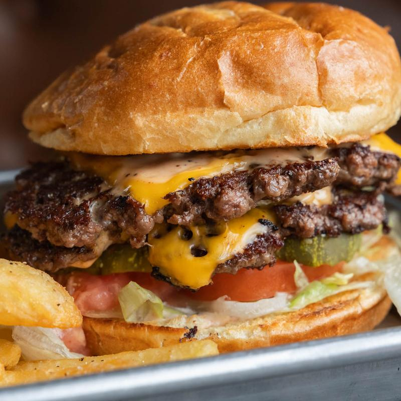

Schedule
- Monday – Thursday: 3:00 PM – 2:00 AM
- Friday: 11:00 AM – 2:00 AM (Friday Lunch & Happy Hour)
- Saturday – Sunday: 10:00 AM – 2:00 AM (Soccer & Football Mornings)
Tyber Creek Pub is located at 1501 S Mint Street in Charlotte's Gold District. Serving proper pints, fish & chips, and late-night fare until 2:00 AM every single day. Full indoor dining, authentic mahogany bar, and a welcoming outdoor patio.

Address:
1501 S Mint Street
Charlotte, NC 28203
Gold District / South End
Phone: (980) 207-0680
info@tybercreekpub.com
Service: Full table dining, mahogany bar seating, dog-friendly outdoor patio, late-night food kitchen, and European match day broadcasts.
Looking to host an event or watch party? Tyber Creek welcomes:


Enjoy our Gold District tavern with seamless neighborhood access: